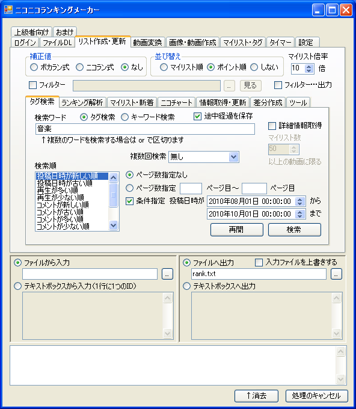

オプションの説明
検索するタグまたはキーワードを指定します。「ピアノ or バイオリン or ベース」のようにワードを or でつなぐと複数のワードで検索できます。
タグ検索かキーワード検索を指定します。ニコニコ動画のオプションと同じです。
ニコニコ動画のオプションと同じです。
「ページ数指定なし」を指定した場合は、最初から最後まで検索します。「ページ数指定」をした場合はニコニコ動画の対応する検索ページの範囲を検索します。 ページ数入力ボックスを空欄にすると最初から（最後まで）になります（例：開始を3、終了を空欄にすると3ページ目から最後まで検索します）。
指定した条件の動画のみをリストに含めます。指定した条件の範囲を超えると検索は自動的に終了します。
例えば、「投稿日時が新しい順」で検索し、「ページ数指定なし」、「投稿日時が2010年08月01日 00:00:00～2010年10月01日 00:00:00」の条件を指定すると、 最初のページから検索を開始し、投稿日時が2010年08月01日 00:00:00より前の動画が現れるまで検索を行います （2010年10月01日 00:00:00から検索が開始されるのではありません）。
「マイリストが少ない順」、「ページ数5～10」、「マイリスト数100以上200以下」を指定すると、5ページ目から検索を始め、 マイリスト数が201以上の動画が現れるか、10ページ目に達すると検索を終了します。
タグ・キーワード検索で生成したリストの各動画に対し、もう一度詳細な情報を取得します。 タグ・キーワード検索では、長いタイトルや、投稿日時の秒が取得できないため、詳細情報取得を行う必要があります。
技術的な話：詳細情報取得は getthumbinfo で行います。
同じ条件で2回以上検索を行います。タグ検索やキーワード検索では、検索の途中でニコニコ動画の検索データベースが更新され、 検索に漏れが生じることがあるため、厳密に検索を行いたい場合は2回行う必要があります。
| 無し | 1度だけ検索を行います。 |
| 2回(1回目を優先) | 2回検索を行い、1回目の検索を優先し、リストを出力します。1回目の検索データに不整合が生じ、2回目には生じなかった場合のみ2回目の検索を出力します。 |
| 2回(2回目を優先) | 2回検索を行い、2回目の検索を優先し、リストを出力します。2回目の検索データに不整合が生じ、1回目には生じなかった場合のみ1回目の検索を出力します。 |
| 2回(マージ) | 2回検索を行い、両方のリストをマージします（重複する動画IDはまとめられます）。 |
| 最大3回 | 2回検索を行い、両者のデータに食い違いが生じた場合は3回目の検索を行います。 |
通常は「無し」（1回検索）で十分です。信頼性を高めたい場合は「2回(マージ)」を選ぶことを推奨します。
このオプションを指定すると、検索を途中で中断できるようになります。再開ボタンを押すと再開履歴ウィンドウが現れ、履歴を選択すると検索を再開できます。